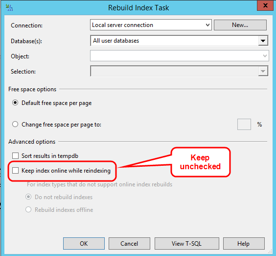

Miscellaneous Administration Notes
SQL Server Issues #
 Replication
Replication
SQL Server's running replication may fail if Process Director is upgraded in a way that alters the database schema. This is because an ALTER query can't be performed on the database if replication is enabled. If the upgrade fails, you may see a SqlException error with the following message: “You can only specify the READPAST lock in the READ COMMITTED or REPEATABLE READ isolation levels”.
If the upgrade fails, perform the following procedure:
- Set the nDBTransIsolationLevel variable in your vars file to IsolationLevel.RepeatableRead.
- Then, click on the Verify Process Director Database Schema button in the IT Admin settings.
- After the database schema has been verified, remove the nDBTransIsolationLevel variable from your custom vars file, and add to the top of the vars file the following line:
<%@ Import Namespace=”System.Data” %>
Full-Text Search
Process Director supports Full Text Searching (FTS) of documents. It utilizes the FTS Indexing in SQL Server. The Full-Text engine must be installed, enabled and configured in SQL Server.
These steps will create a Full-Text Index in SQL Server and start the population of the index. The population needs to be run to index new documents added to the system. This can be configured to run automatically (e.g. through the scheduler), or can be configured to update the index every time a document is added/removed from the server. To perform a manual population, under the Process Director database entry, click on the [Storage] Full-Text Catalogs entry and right click on the BPLogixFTS catalog in the right side pane, and choose the menu item Start Incremental Population. On SQL Server 2008 set the Population Schedule for the new FTS index.
- Open the SQL Server Management Studio.
- Expand the Process Director database and right click on the tblObject table. Select the "Full-Text Index Table -> Define Full-Text Index" menu entries.
- Using the Full-Text Indexing Wizard, select the default Unique Index by pressing the Next button.
- Set Columns and Document Types: Under the Available columns item, select the checkbox next to bObjectData. Under the column named “Document type column” set the value to sFileType for the bObjectData row just selected. Press Next to continue.
- Enter the appropriate change tracking. Press Next to continue.
- Enter a catalog name (e.g. BPLogixFTS). Press Next until the wizard completes.
- Create an optional population schedule. Press Next to continue.
- Set IFilters: IFilters are needed to index the various document/file types. If Microsoft Office is installed on the server where Process Director is installed, an IFilter is automatically included for Office documents allowing them to be indexed. PDF documents require the Adobe Acrobat IFilter (e.g. Adobe PDF IFilter 11) to be installed. The 64-bit version of the IFilter can be downloaded from the Adobe web site. (Adobe currently bundles a 32-bit PDF IFilter with Adobe Acrobat® 11 as well as the free Adobe Reader® 11 software.) The Acrobat IFilter must be installed prior to creating the index. If the index already exists, delete it, install the Adobe IFilter and recreate the index. Additionally, the Adobe IFilter requires that the "bin" folder be added to the PATH environmental variable. For more information on the Acrobat IFilter and SQL Server see the relevant documentation from Adobe.
Windows and SQL Server will natively support .DOC, .XLS and .PPT file types, however to support .DOCX, .XLSX, and .PPTX files, you'll need to install the Office Filter pack
Refer to the vendor of the document/file format for information on IFilters, or use third party IFilter products for common file types such as ZIP, JPG and TIFF.
Refer to the SQL Server documentation for scheduling options and detailed configuration and tuning information for the full-text engine.
You should be aware, however, that FTS isn't a panacea for all text search issues. The way FTS is configured by default may result in unexpected search results if you aren't aware of the default configuration. For example, when using FTS on SQL Server there is a default list of “Stop Words” that Microsoft identifies as items that are not significant when doing FTS indexing. So, by default, if you are searching for something like “Activity 1” using FTS, SQL Server will not find it using the following syntax:
SELECT tblObject.oDID FROM tblObject WHERE CONTAINS(bObjectData, N'"%Activity 1%*"')
But if you were searching for “Activity 1A”, that would work using the same syntax:
SELECT tblObject.oDID FROM tblObject WHERE CONTAINS(bObjectData, N'"%Activity 1A%*"')
Why? Because the indexing lists the trailing number (1) in the first example in the ‘system’ Stop Word list, and so does not include the trailing number as part of the search criterion in the first example.
To see what Stop Word list is used by tblObject, issue this SQL command:
SELECT
ft_c.name AS [Catalog],
s.name AS [Schema],
o.name AS [Table],
[StopList] =
CASE
WHEN ft_i.stoplist_id IS NULL THEN 'None'
ELSE ISNULL(ft_sl.NAME, 'System')
END
FROM
sys.fulltext_indexes AS ft_i LEFT OUTER JOIN
sys.fulltext_stoplists AS ft_sl ON ft_sl.stoplist_id = ft_i.stoplist_id INNER JOIN
sys.fulltext_catalogs AS ft_c ON ft_c.fulltext_catalog_id = ft_i.fulltext_catalog_id INNER JOIN
sys.objects AS o ON o.object_id = ft_i.object_id INNER JOIN
sys.schemas AS s ON s.schema_id = o.schema_id
To see the list of all stop words for English:
SELECT * FROM sys.fulltext_system_stopwords WHERE language_id = 1033;
To turn off the use of stop words in SQL Server for tblObject:
ALTER FULLTEXT INDEX ON tblObject SET STOPLIST = OFF
To use "system" stop words in SQL Server for tblObject:
ALTER FULLTEXT INDEX ON tblObject SET STOPLIST = SYSTEM
SQL Queries Run Slowly After Upgrading to SQL Server 2014
In SQL Server 2014, Microsoft changed how SQL commands are evaluated. If, while running SQL Server 2008/2012, you created a SQL view that contains array fields for a form definition, this query will run more slowly if you subsequently upgrade your database to SQL Server 2014. This is only an issue on SQL Server 2014 with views that map columns in an array. Views that map array fields will need to be dropped and recreated after the upgrade to SQL 2014. When you recreate the view from the form definition, it will append a new "trace flags" option that will tell SQL Server 2014 to use the older logic from SQL Server 2008/2012, and eliminate the performance deficiency.
SQL Server Escape Bug
A bug in SQL Server can cause a performance problem with Knowledge Views searching for form data using "contains". To work around this, the product will now match any special wildcard characters in your search filter with any character. You can re-enable the exact matching using special characters by setting the fEnableSQLEscape Custom Variable that we created to help mitigate this SQL Server bug to 'true". The new variable exists to enable the ESCAPE, but ensure your SQL Server version is patched at the appropriate level. The variable can be enabled in the Custom Vars file in the PresetSystemVars() function.
See the MS KB article: https://support.microsoft.com/en-us/kb/2698639 for more information. It is important to note that the bug effects more than the SQL Server versions listed in the KB article (e.g. SQL Server 2014 is also effected).
Rebuilding Database Indexes
You should, as part of your regular SQL Server maintenance, have a maintenance plan for rebuilding database indexes and statistics on a recurring basis. We recommend doing this weekly. For the “Rebuild Index Task” in SQL Server we recommend that the check box labeled “Keep index online while reindexing” is NOT checked.

IIS Issues
SMTP with IIS/Exchange Server
On Windows 2003, the SMTP email notification can use the IIS SMTP server or Microsoft Exchange Server. If you are running Microsoft Exchange Server on Process Director host, this will be used as the SMTP host instead of the IIS SMTP Server. Microsoft Knowledge Base articles Q238956 and Q228465 have additional information regarding the configuration and troubleshooting.
To use Exchange Server you still have to install IIS SMTP. After it is installed change the "Pickup" parameter: This IIS command will display the current "Pickup" directory:
%WINDIR%\system32\inetsrv\adminsamples\ADSUTIL set SMTPsvc/1/PickupDirectory
Use the following command to change the "Pickup" directory to Exchange Server:
%WINDIR%\system32\inetsrv\adminsamples\ADSUTIL set SMTPsvc/1/PickupDirectory X:\exchsrvr\imcdata\Pickup
where X: is the drive where Exchange Server is installed. To revert back to the original IIS SMTP configuration run the "set" command again with the directory value displayed on the first command (e.g. c:\inetpub\mailroot\pickup).
On Windows 2003, "Smart Host" on the IIS SMTP Server allows the SMTP server to point to another mail server to forward its emails.
Improving IIS Performance
Occasionally, you may notice that Internet Information Service (IIS) loads Process Director pages very slowly. Normally when IIS starts an Application Pool, it checks the Certificate Revocation List (CRL) for managed assemblies that have an Authenticode signature to confirm that the signature is valid. Performing the CRL check requires the .NET framework to connect to the Internet to access the CRL. This can cause long delays in loading .NET applications in IIS.
Edit the Config file for ASP.NET to prevent IIS from checking the Certificate revocation List. . Turning the CRL check option off means that if a signed .NET application has it certificate revoked it will still load. This is usually fine, however, because a) you should already be properly managing the applications that are on your server, and b) anyone who has an access level that allows them to put a revoked application on your server already has enough access to perform far more malicious acts.
Open the config file for ASP.NET, which should be located in the root folder of the framework version you are using. For example, if you are running the .NET Framework v2.0, in the 64-bit environment, the config file should be found at:
C:\Windows\Microsoft.NET\Framework64\v2.0.50727\aspnet.config
Edit the Config file to stop the CRL check by adding this tag to the <runtime> section of the config file:
<generatePublisherEvidence enabled="false"/>
Browser Issues #
Underscore Bug
Some versions of Internet Explorer don't support domain names or server names with an underscore in the URL. While general browsing in IE still works, all session and browser cookies are ignored. With cookies ignored, login to Process Director using internal user names doesn't work. The product checks for underscores in the domain name to detect this problem. This is, however, a bug in Microsoft IE, not Process Director. Using Chrome, Firefox, or Safari will allow users to log in properly.
Integrated Browser Security Issues
There is a known IE problem that happens when some ASP pages in IIS are running “Integrated Browser Security” (NTLM) and other pages aren't (the other pages are just using normal anonymous user access). There are bugs in the browser that can cause posted form data to be stripped. In some cases it appears whenever the client cache is cleared (which can happen automatically on occasion, with things like virus scanners). The Microsoft Knowledge base contains an article discussing the problem. There are two ways to work around this problem.
Option 1
Use Regedt32 on the client machine and go to this branch:
HKEY_LOCAL_MACHINE\Software\Microsoft\Windows\CurrentVersion\Internet
On the Edit menu, Add Value name DisableNTLMPreAuth as a type REG_DWORD and set the data value to 1 (true).
Option 2
Configure all pages in your virtual directory to use “Integrated Browser Security”. This means that the logged in users won't be running as the “anonymous” user id (IUSR_hostname), but instead the web pages will be run under the context of the authenticated user.
"Internet Explorer can't display the webpage" error
A user sees the error “Internet Explorer can't display the webpage” on long running web page requests. Either remove the following registry key or set it to decimal 60000 on the CLIENT PC:
HKEY_CURRENT_USER\Software\Microsoft\Windows\CurrentVersion\Internet Settings\ReceiveTimeout
This may need to be repeated as certain applications may reset this to a 10000 (10 seconds). If this doesn’t work, you may want to try connecting to other, smaller pages and test your internet connection.
Microsoft Edge/Windows 10
A bug in Windows 10 and Microsoft Edge causes new windows to open behind parent windows, rather than on top of them. As a workaround, for Process Director v4.5, we have added the following line to the Custom Variables file:
bp.Vars.nFormOpenProps = FormOpenProps.UseFullScreen;
This will force JavaScript to open the new window in a maximized fashion, therefore pushing the new window to the top of the other windows.
This should be an acceptable temporary workaround until Microsoft corrects the bug.
Virus Scanners #
Some virus scanners that are configured to scan in real-time can cause delays on the system. This tends to happen when they are monitoring the Process Director logs directory. Process Director will write audit logs and internal logs to the log files on disk. For example if you are using Microsoft Security Essentials you may see the CPU being used by “msmpeng.exe” when running Process Director forms and Workflows. If you are seeing this problem, exclude the following folder from the real-time scanning:
\Program Files\BP Logix\Process Director\website\App_Data\
This is the folder that contains the log files that are being written to when the system is being used.
TIFF Files #
TIFF file formats aren't natively supported in most browsers. To display a TIFF file in a browser or embedded on a Form you must install a TIFF ActiveX viewer (e.g. www.alternatiff.com, QuickTime, etc.). These viewers are provided by and supported by their respective companies. Once a TIFF viewer is installed on all users PC's, you can configure Process Director to display the TIFF files inline, instead of as a popup window in another application. This is done by adding the following lines to Process Director configuration file named vars.cs.ascx. Add to the PreSetSystemVars() function in vars.cs.ascx
bp.Vars.EmbedDocumentTypes.Add("tiff");
bp.Vars.EmbedDocumentTypes.Add("tif");
The vars.asp configuration file is located in the c:\Program Files\BP Logix\Process Director\website\custom\ directory.
DDE and Excel #
If you are unable to open Excel documents from Process Director or, upon trying to open an Excel document, ensure that DDE is enabled in Microsoft Excel. See Microsoft's documentation on this error for more information and instructions on how to enable DDE.
You should also verify that Process Director is listed as a trusted site on Internet Explorer.
Document Downloading Issues #
Process Director can store any file type. These files and documents can be viewed in the browser or downloaded to your PC. Windows Server, however, won't allow unregistered file types to be downloaded. The browser may display the following message:
HTTP Error 404 - File or directory not found.
For information on how to configure new file types in Windows IIS, refer to the Microsoft Knowledge Base article on this issue.
Installation with Multiple IP addresses #
Using two NIC’s (IP addresses) that can connect to the product presents configuration choices. The ideal configuration is to have a single DNS name that all users can access. This problem can occur when trying to have different IP’s for the intranet and Internet access.
Here are some of the configuration options to connect to the product from multiple interfaces:
Option 1
If multiple interfaces exist and users can only access the server using one of them, you'll have to remove the “Interface URL” configuration from the installation settings. Additionally you'll have to modify all email templates to display two URL’s, one for accessing the system externally and the other for accessing the system internally.
Option 2
Use proxy DNS technique that uses the same name that point to different IP’s depending on where the user is located (e.g. internal users resolve the name to the internal IP, and external users resolve the name to the Internet address).
Coordinated Universal Time (UTC) #
Process Director's internal timekeeping is always conducted in UTC, including all process timekeeping, start/end dates/times, etc. As such, Process Director doesn't store local times. Process Director will generally convert the UTC time to your local time automatically when the dates/times are displayed, but the actual saved dates are in UTC time (Greenwich Mean Time).
Resource Strings #
Inside the Process Director interface, most control labels are generated by Resource Strings that are located in the Resources.resx file that is located in the %InstalDir%\website \App_GlobalResources folder. Occasionally, after a Windows Update reboot, this file will, for reasons still unknown, be deleted. If this occurs, you'll see an error message similar to the following:
Error processing source URL: http://xyz.bplogix.net/admin/admin.aspx
Source: System.Web
Message: The resource object with key '___somestring___' was not found
The other error you'll occasionally see is an exception accessing a function toString(), which is the system trying to retrieve a string resource from the Resources.resx file that can't be found.
To recover from these errors, just reinstall Process Director to restore the Resources.resx file.
Simultaneous Windows and LDAP Authentication #
You can configure a Process Director installation to have both Windows and LDAP authentication enabled at the same time. To enable this, you have to enable Windows and LDAP authentication, but disable Integrated Windows authentication and disable the function that automatically adds users after they initially authenticate through Windows or LDAP. To configure the system in this way, the following flags must be set in the PreSetSystemVars() method of the custom variable file.
bp.Vars.fAuthTryAllAuthTypes = true;
bp.Vars.fAuthWindowsIntegrated = false;
bp.Vars.fAuthWindowsAutoAdd = false;
bp.Vars.fAuthLDAPAutoAdd = false;
Force TLS 1.2 on outgoing HTTP connections #
For Process Director v5.34 and higher, the default the SSL cipher used for outgoing web requests will use TLS 1.2 instead of 1.0 or 1.1, which have been deprecated for security reasons. This can be changed back by setting this in the vars:
System.Net.ServicePointManager.SecurityProtocol = System.Net.SecurityProtocolType.Ssl3|System.Net.SecurityProtocolType.Tls;
AES Encryption for Process Director v5.44.700 and Higher #
Process Director v5.44.700 and higher implements AES encryption. This encryption change provides higher security, but it does affect the migration process the first time--and ONLY the first time--you install v5.44.700 or higher from v5.44.600 or lower (except for load-balanced installations). Upgrading from v5.44.700 to any higher version will require no special action for most customers.
Please refer to the Upgrading to a Newer Version section of the Reinstall/Upgrades/Moving Hosts topic of the Installation guide, which covers the upgrade process for most customers.
Customers who manage a load-balanced installation are subject to some additional considerations, which are documented in the Installation Settings section of the Load Balancing, Standby, and Rendering Options topic of the System Administration Guide.
On-premise customers who decide NOT to upgrade to v5.44.700, should also make a specific change to their installation. BP Logix recommends that you manually edit your installation's web.config file to direct Internet Information Server to provide an auto-generated cryptographic key that will be unique to your installation.
To do so, you should edit the machineKey configuration setting in the system.web section of the web.config file so that it looks like the example highlighted in red below.
<configuration>
// Some other configuration settings may appear here
<system.web>
<machineKey
validationKey="AutoGenerate,IsolateApps" validation="HMACSHA512"
decryptionKey="AutoGenerate,IsolateApps" decryption="AES" />
// Some other configuration settings may appear here
</system.web>
// Some other configuration settings may appear here
</configuration>
Once you have made this change and saved the web.config file, the system will recompile and new AES encryption keys will be automatically generated for your installation.